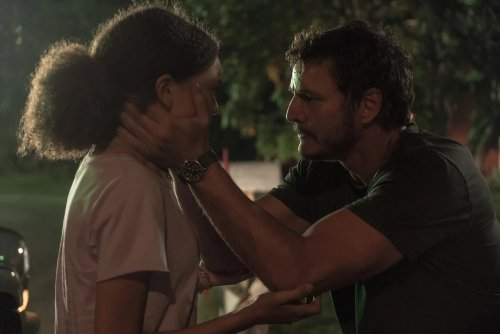
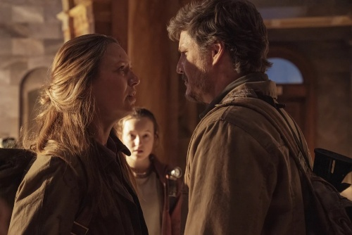
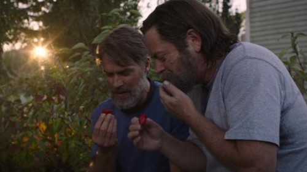
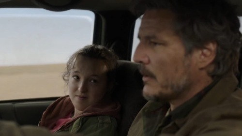
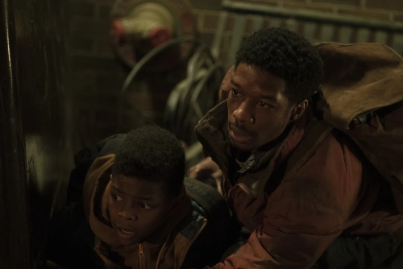
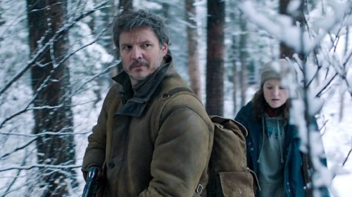
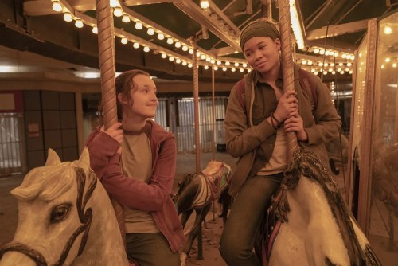
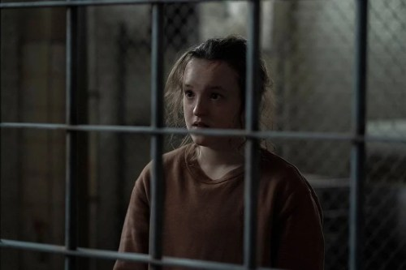
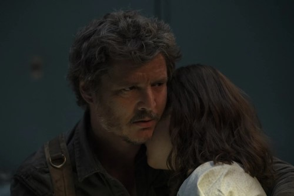

1.Cuando estas perdido en la osecuridad
En el año 2003, se desencadena un brote de Cordyceps, un hongo que afecta al
cerebro de los individuos contagiados, y los convierte en criaturas despiadadas
que se alimentan de otros seres humanos. En este escenario desolador, Joel,
un padre soltero, trata de poner a salvo a su hija. La historia da un salto
temporal de veinte años, y muestra un mundo post apocalíptico, donde los pocos
supervivientes tratan de mantenerse con vida. Joel y Tess tienen una nueva misión,
poner a salvo a Ellie, una joven que podría ser la única esperanza de la humanidad.

2.Infectado
Joel, Ellie y Tess consiguen escapar de la zona en cuarentena y deben atravesar
una peligrosa zona en ruinas de Boston. Joel y Tess no terminan de ponerse de
acuerdo a la hora de elegir el destino de Ellie, y discrepan de si deben o no
mantenerla a salvo o entregársela a los Luciérnagas

3.Mucho mucho tiempo
Bill, uno de los supervivientes del campamento, consigue crear una alianza
especial con un extraño se acerca al recinto. Bill se convierte también en una
pieza clave en el viaje de Joel y Ellie, quienes no dudan en pedirle consejo para
saber cómo actuar en la misión que deben llevar a cabo.

4.Por favor sosten mi mano
Inmersos en su viaje, después de hacerse con un vehículo en casa de Bill y Frank,
se cruza en su camino una amenaza aún más letal que los infectados: supervivientes
desesperados. Joel teme revivir el trágico desenlace de su hija, y hace todo lo
posible para proteger a Ellie, con quien la relación es cada vez más cercana.

5.Aguantar y sobrevivir
Joel y Ellie se cruzan en el camino de Henry, el hombre más buscado de Kansas City.
Pronto comprenden que todos pertenecen al mismo bando y deciden unirse para ser más
fuertes. Pero sus planes se truncan cuando Kathleen y sus hombres aparecen en escena
dispuestos a darles su merecido

6.Familia
Joel sigue empeñado en encontrar a su hermano Tommy y a las Luciérnagas, y
está dispuesto a seguir su camino, junto a Ellie, pese a las advertencias de los
supervivientes de la zona sobre los peligros que esconde ese territorio.

7.Dejado atras
Mientras Ellie trata de salvar la vida de Joel, sus recuerdos viajan al pasado,
justo antes de conocer a su compañero de viaje. Ellie recuerda su historia con Riley,
cuando aún vivía en las instalaciones de FEDRA, y vienen a su cabeza algunos de los
momentos más especiales que vivió junto a ella.

8.Cuando estamos en necesidad
Mientras Joel se recupera de su herida, Ellie sale en busca de comida.
En su camino, se cruza con el líder de un grupo de supervivientes, que le invita
a unirse a su comunidad. Ellie no se fía demasiado de este misterioso hombre, y
vuelve a ver a Joel para avisarle de que unos hombres aparecerán por allí para acabar
con su vida

9.Busca la luz
El viaje de Joel y Elli le se acerca a su fin. Pero no se imaginan lo que se van
a encontrar cuando lleguen a su destino. Por otra parte, Anna está embarazada y
no duda en confiar en un viejo amigo.
